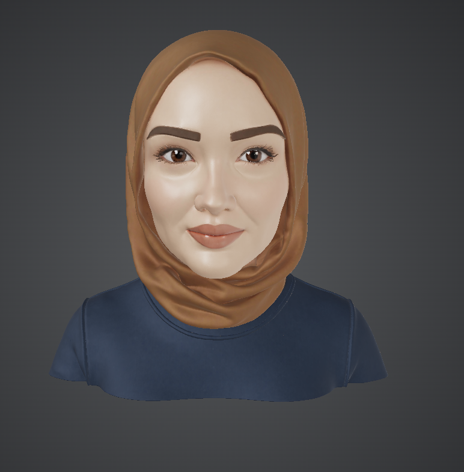

3rd year Software Engineering student at OSTİM Technical University — specializing in deep learning, computer vision, and full-stack development. 3× Teknofest finalist.
From intelligent algorithms to polished applications—I commit to excellence at every layer. Deep learning, full-stack systems, embedded solutions. Performance, precision, impact. Always.
React · Next.js · TypeScript · Tailwind CSS · HTML5
Node.js · Express · Python · C# · ASP.NET Core · SQL
PyTorch · OpenCV · YOLO · Deep Learning · Data Analysis
"Excellence isn't a choice—it's a commitment. At every layer, every time."
End-to-end management portal with role-based access control, room allocation, and real-time tracking for university dormitories.
→Security-focused CLI tool for file integrity verification using SHA-256 hashing and RSA digital signatures.
→Industrial optimization tool with a real-time GUI for tracking and balancing production line workloads.
→Physics-based simulation of seismic activity and structural impact, built with browser-native technologies.
→Nov 2025 – Feb 2026
Building production RESTful APIs with Node.js, Express.js, and designing React interfaces with dynamic state management. Backend optimization with CRUD operations, SQL database architecture, and middleware implementation for authentication.
React · Node.js · Express.js · SQL · JavaScript · TypeScript
Jun 2025
Assisted in process improvement and quality assurance workflows. Gained hands-on experience in optimizing business processes and implementing systematic approaches to operational efficiency.
Process Management · Quality Assurance · Business Analysis
Dec 2024 – Feb 2025
Developed deep learning models incorporating PyTorch and OpenCV for computer vision applications. Applied YOLO for object detection and worked with data preprocessing pipelines for real-world datasets.
PyTorch · OpenCV · YOLO · Deep Learning · Computer Vision
Apr 2024 – Oct 2024
Contributed to autonomous underwater vehicle control systems and embedded software development. Collaborated in a competitive innovation environment focusing on algorithm design and real-time performance optimization.
Embedded Systems · Algorithm Design · Python · C#
After university entrance exams, I made a choice that felt risky at the time — my only preference in my exam choices was software engineering. No backup plans, no alternatives. Something inside me knew this was the path. That summer, I started learning to program on my own, piece by piece, building foundations while discovering what truly excites me.
When I joined Meftun-u Derya's autonomous systems team for Teknofest, everything clicked. Competing at this level, working on real autonomous underwater vehicles, pushing the boundaries of what's possible — this transformed my passion into something deeper. Becoming a 3× finalist wasn't just an achievement; it was proof that I could take an idea and bring it to life, that I belonged in this space.
My internships gave me breadth — from full-stack development at DeniGlobal to process optimization at Emtis, from AI research at Ordulu Teknoloji to embedded systems challenges. Each experience added layers to how I think. I learned that problems aren't siloed. A backend architecture decision impacts user experience. A computer vision algorithm changes how we approach autonomous systems. This holistic view — seeing the full picture — became my greatest asset.
That's what tech should be about. Understanding the real problem, not just writing code. Every line I write, every architecture I design — it's in service of something meaningful. I obsess over process because process defines outcomes.
Innovation requires both. Elegant technical solutions need creative thinking to exist. I bring unconventional ideas to the table and back them with rigorous implementation. That intersection — where creativity meets engineering — is where breakthroughs happen.
Understanding AI's strengths and limitations is crucial. I don't chase hype. I study architectures, evaluate frameworks, and deploy them where they genuinely solve problems. Technology leadership means staying ahead of what's possible while staying grounded in what's practical.
Finalist in "Unmanned Underwater Systems" and "Unmanned Marine Vehicle" competitions, demonstrating innovation in autonomous systems and AI integration.
Completed advanced training in Git & GitHub version control and JavaScript fundamentals, strengthening development workflow practices.
Certified B2-level English through Ostim Technical University, enabling effective collaboration in international tech environments.
Graduated from Sabahat Cemil Ulupınar High School with 94.5/100 GPA, building a strong foundation in STEM subjects.
I'm always excited about innovative projects, internships, and collaborations that push the boundaries of what we can create. Whether it's AI systems, full-stack applications, or something entirely new — let's bring ideas to life.